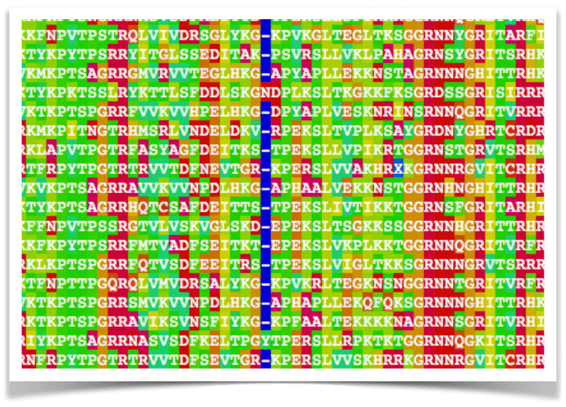
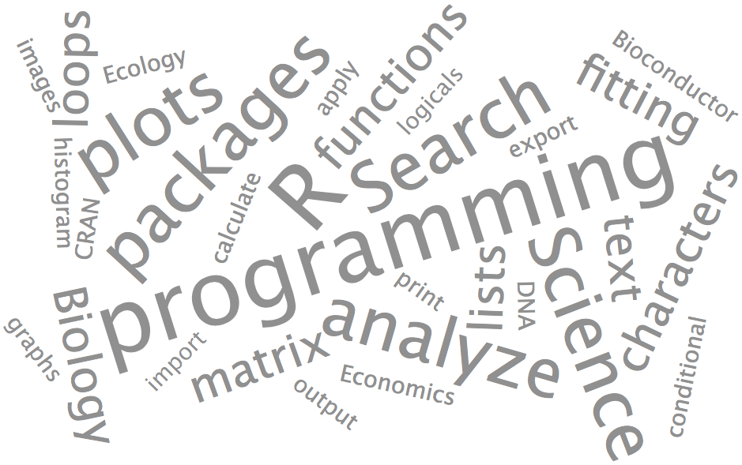
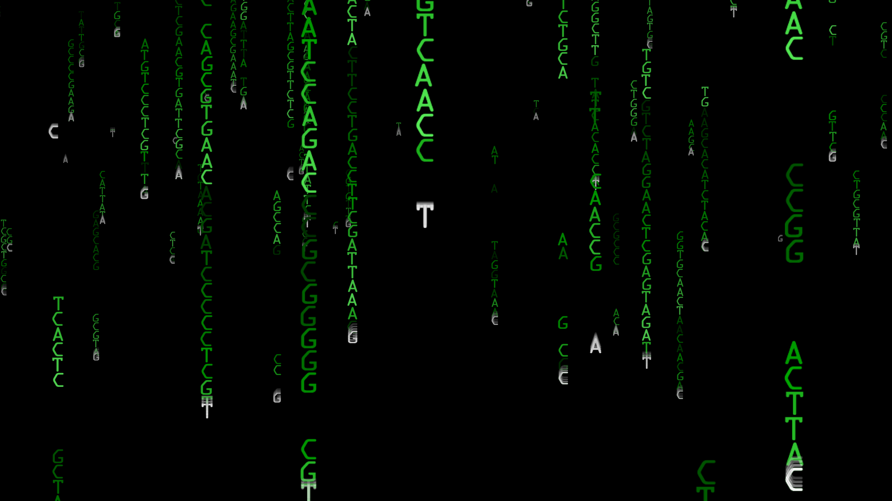

Tutorials
The Tutorials section includes resources for everyone from novice to advanced R programmers. Although some of DECIPHER's functionality is accessible via this web tools, many features require using the DECIPHER package in R.Short examples of using DECIPHER for sequence alignment can be found on the Alignment page. For installation directions, please see the Downloads page.
Examples Gallery - Showcasing the DECIPHER package for R in action.

Documentation - Help files associated with the DECIPHER software.
R Lessons - An introduction to using the R programming language for scientific research.

Bioinformatics - Video tutorials about using DECIPHER for bioinformatics for anyone from the beginner to advanced R programmer.
